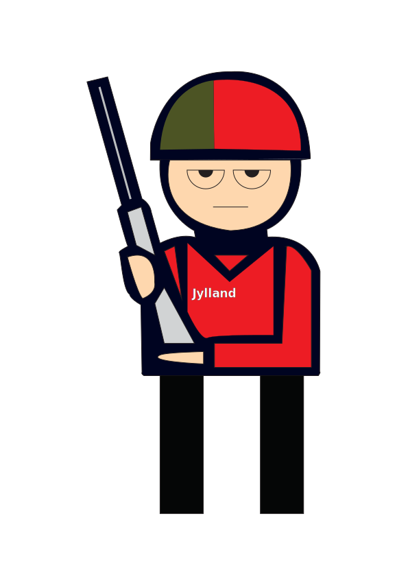
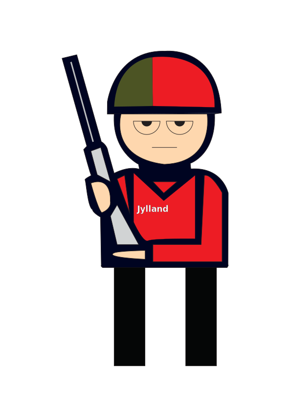

I dette tema arbejdede vi med at skabe interaktive websites med HTML, CSS og JavaScript, samt grafisk design i Adobe Illustrator. Desværre blev jeg ramt af influenza under forløbet og nåede derfor ikke at færdiggøre mit emergency site som planlagt. For at få mest muligt ud af temaet alligevel, brugte jeg en del tid på at se Maries videoer samt mange tutorials på YouTube. Det gav mig en solid forståelse for brugen af Adobe Illustrator, som jeg senere har kunnet bruge aktivt på min portfoliohjemmeside — bl.a. til at designe mit logo og min løbemand på forsiden.
 
